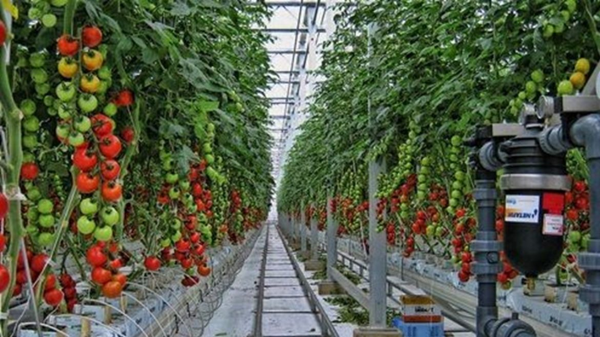

Millenial merupakan proyek yang dikembangkan oleh yohana polin simatupang mahasiswa tingkat 3 disebuah
perguruan tinggi hal ini dilandaskan oleh perbedaan cara dan hasil pertanian di indonesia. disadari bahwa
kodisi geografis menjadi salah satu penyebabkan maka dengan adanya ide tersebut maka setiap pertani diseluruh
indonesia dapat berkomunikasi dan berbagi informasi yang akan mengembangkan potensi pertanian dan peternakan indonesia
website yang dibangun untuk membantu masyarakat yang bekerja dibidang pertanian
dan peternakan untuk meningkatkan kualitas dari hasil produk. Didasarkan dengan pertumbuhan
lulus pertanian dan perternakan yang semakin tinggi khususnya di masyarakat millenial di harapkan
setiap lulusan mampu memberikan kontribusi bagi industri pertanian dan peternakan.
Peternak Millenial
Hai sobat milenial, Peternakan merupakan industri dengan peminat yang cukup rendah di Indonesia. Beternak sering dianggap kurang keren dan sulit untuk dilakukan, apalagi karena berurusan langsung dengan hewan ternak. Namun tidak dipungkiri sudah banyak juga masyarakat muda yang sukses dalam berternak. Dengan bergabung di U-Milenial diharapkan masyarakat muda dapat berbagi informasi mengenai trik dan teknik dalam pengembangan ilmu ternak. Apalagi yang sobat tunggu, segera daftar kan diri anda, untuk sukses bersama memajukan industri peternakan Indonesia.
3 Jenis Peternakan
Peternakan Hewan Besar
Peternakan jenis ini membudidayakan hewan-hewan bertubuh besar, seperti sapi, kuda, dan kerbau. Ternak hewan-hewan bertubuh besar diambil manfaatnya dalam bentuk susu, daging, kulit, dan tenaganya sebagai alat transportasi.
perternakan Hewan Unggas
Ayam, bebek, angsa, itik, dan puyuh merupakan beberapa contoh hewan unggas yang banyak dibudidayakan oleh masyarakat. Manfaat beternak hewan-hewan unggas adalah untuk diambil daging, telur, bulu, atau sebagai penghibur untuk dinikmati suara atau keindahannya.
Peternakan Hewan Kecil
Peternakan hewan kecil membudidayakan hewan-hewan bertubuh kecil, seperti babi, kambing, domba, kelinci, dan lainnya. Manfaat beternak hewan-hewan kecil adalah untuk diambil susu, daging, dan kulitnya.
Petani Milenial
Hallo petani milenial, untuk menyambut era 5.0 kami mengajak saudara/saudari untuk menjadi patner kami dalam membangun industri pertanian. Pertanian konvesional? Mungkin akan membosankan untuk sobat milenial, namun dengan pekembangan teknologi dan informasi kini pertanian modern telah berkembang pesat di Indonesia. Terdapat beberapa jenis pertanian modern seperti pertanian hidroponik, holikultura, dan itegrasi automasi pertanian. Dari ketiga jenis tersebut kita akan fokus dengan pertanian holtikulura dan hidroponik.
Pertanian Holtikultura
Holikutura merupakan pertanian yang memadukan ilmu, teknologi dan ekonomi. Secara unum pertanian holikultura membudidayakan tanaman sayur, bunga, herbal dan buah-buahan. Dengan menyatukan ilmu dan pengalaman, sahabat milineal dapat berbagi dan menerima informasi melalui komunitas U-Milenial.
Pertanian Hidroponik

Hidroponik merupakan sistem pertanian yang menggunakan air sebagai sumber daya. Maka hal ini sangat memungkinkan bagi sobat yang tidak memiliki lahan yang luas untuk memulai menjadi seorang petani yang handal. Pertanian Hidoroponik kini telah menjadi solusi metode pertanian yang sangat cocok bagi sobat milenial.Mari bergabung dengan kami dan saling berbagi informasi.
Distribusi Hasil
Bagi sobat yang telah berhasil dalam pengembangan industri peternaka dan pertanian dapat bergabung dengan tim Distribusi hasil. Hasil dari kerja keras yang sobat lakukan dapat dijual dalam website melalui tim distributor. Dengan diterapkannya manajemen terhadap hasil diharapkan harga pasar dari hasil tani/ternak dapat memiliki kestabilan yang baik dipasar.
Top Produk
Bawang Bekasi
Salmon NTT
Tomat berastagi
Supplier
Bagi sobat milenial tidak perlu takut untuk memulai, setelah bergabung menjadi tim U-Milenial. Informasi dan tips akan dishare setiap saat termaksud juga informasi mengenai supplier terbaik untuk tanaman dan ternak sobat. Mulai dari bibit, pestisida, pupuk, dan pangan ternak akan disediakan oleh tim supplier.